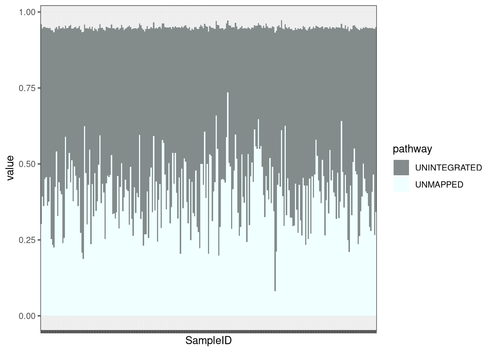

Functional exploratory analysis
Carlos Blázquez Bondia
2022-10-13
Last updated: 2022-10-13
Checks: 6 1
Knit directory: advanz4/
This reproducible R Markdown analysis was created with workflowr (version 1.7.0). The Checks tab describes the reproducibility checks that were applied when the results were created. The Past versions tab lists the development history.
The R Markdown file has unstaged changes. To know which version of
the R Markdown file created these results, you’ll want to first commit
it to the Git repo. If you’re still working on the analysis, you can
ignore this warning. When you’re finished, you can run
wflow_publish to commit the R Markdown file and build the
HTML.
Great job! The global environment was empty. Objects defined in the global environment can affect the analysis in your R Markdown file in unknown ways. For reproduciblity it’s best to always run the code in an empty environment.
The command set.seed(20211203) was run prior to running
the code in the R Markdown file. Setting a seed ensures that any results
that rely on randomness, e.g. subsampling or permutations, are
reproducible.
Great job! Recording the operating system, R version, and package versions is critical for reproducibility.
Nice! There were no cached chunks for this analysis, so you can be confident that you successfully produced the results during this run.
Great job! Using relative paths to the files within your workflowr project makes it easier to run your code on other machines.
Great! You are using Git for version control. Tracking code development and connecting the code version to the results is critical for reproducibility.
The results in this page were generated with repository version 679dfd5. See the Past versions tab to see a history of the changes made to the R Markdown and HTML files.
Note that you need to be careful to ensure that all relevant files for
the analysis have been committed to Git prior to generating the results
(you can use wflow_publish or
wflow_git_commit). workflowr only checks the R Markdown
file, but you know if there are other scripts or data files that it
depends on. Below is the status of the Git repository when the results
were generated:
Ignored files:
Ignored: .RData
Ignored: .Rhistory
Ignored: .Rproj.user/
Ignored: Metadata/MetadataManagement/Old_Metadata/
Ignored: analysis/.Rhistory
Ignored: analysis/010_Basic_Report_cache/
Ignored: analysis/420_Taxonomy_DA_cache/
Ignored: analysis/510_Function_DA_cache/
Ignored: data/mre.rds
Untracked files:
Untracked: Metadata/2022_10_05_clean_metadata_LIMS.csv
Untracked: analysis/510_Function_DA.Rmd
Untracked: analysis/605_Adenovirus_Analysis.Rmd
Untracked: data/All_pathabun_relab.tsv
Unstaged changes:
Modified: advanz4.Rproj
Modified: analysis/010_Basic_Report.Rmd
Modified: analysis/310_IGC_analysis.Rmd
Modified: analysis/320_Beta_Diversity.Rmd
Modified: analysis/410_Taxonomy_Exploration.Rmd
Modified: analysis/420_Taxonomy_DA.Rmd
Modified: analysis/500_Gene_function_exploratory.Rmd
Deleted: analysis/505_Adenovirus_Analysis.Rmd
Modified: analysis/_site.yml
Modified: code/myFunctions.R
Modified: output/general_boxplot_stats
Modified: output/mre_data/CatalogMapping/IGC/lmm/lmm_time_point_by_group.pdf
Modified: output/overall_pvals.csv
Note that any generated files, e.g. HTML, png, CSS, etc., are not included in this status report because it is ok for generated content to have uncommitted changes.
These are the previous versions of the repository in which changes were
made to the R Markdown
(analysis/500_Gene_function_exploratory.Rmd) and HTML
(docs/500_Gene_function_exploratory.html) files. If you’ve
configured a remote Git repository (see ?wflow_git_remote),
click on the hyperlinks in the table below to view the files as they
were in that past version.
| File | Version | Author | Date | Message |
|---|---|---|---|---|
| Rmd | 679dfd5 | cblazquez-irsi | 2022-09-29 | started adding adonis to NMDS |
| Rmd | f3817ff | cblazquez-irsi | 2022-09-29 | Started gene function analysis |
suggested package selbal vsuggested package DataExplorer vsuggested package lme4 vsuggested package merTools vLet’s tidy up the table into a long format, so it will be easier to plot from now on:
# first_table <-
# metar::get_genefunction(mymre, type = "humann", annotation = "kegg")
# %>%
# tidyr::pivot_wider(names_from = "kegg_id", values_from = "CPM")
name_df <-
rownames(pathways) %>%
stringr::str_split_fixed(., ": ", n = 2) %>%
as.data.frame() %>%
stats::setNames(c("path", "description"))
first_table <- pathways %>%
t() %>%
as.data.frame() %>%
setNames(name_df$path) %>%
tibble::rownames_to_column("SampleID") %>%
pivot_longer(., cols = !"SampleID", names_to = "pathway") %>%
dplyr::filter(SampleID %in% metadata$SampleID)
unint_mean <- first_table %>%
filter(pathway == "UNINTEGRATED") %>%
pull(value) %>%
mean()
unmap_mean <-
first_table %>%
filter(pathway == "UNMAPPED") %>%
pull(value) %>%
mean()
first_table %>%
dplyr::filter(pathway %in% c("UNMAPPED", "UNINTEGRATED")) %>%
right_join(., metadata[,c("SampleID", "group", "time_point")],by = "SampleID") %>%
ggplot(aes(x=SampleID)) +
geom_col(aes(fill = pathway, y = value), position = "stack", stat="identity", width = 1) +
# geom_hline(yintercept = unmap_mean, lwd = 1.5, lty = 5, col = "azure", show.legend = T) +
# geom_hline(yintercept = unint_mean, lwd = 1.5, lty = 5, show.legend = T) +
theme_bw() +
theme(axis.text.x = element_blank()) +
scale_fill_manual(values=c("azure4","azure")) 
As we can see, most values of dataset consists of, either unmapped reads (UNMAPPED) or mapped reads who could be attributed to a gene family but but could not be integrated in any cataloged pathway from MetaCyc. We’ll remove those to prevent noise.
path_df <- first_table %>%
dplyr::filter(!pathway %in% c("UNMAPPED", "UNINTEGRATED"))Barplot description
path_df %>%
# metar::get_genefunction(mymre, type = "humann", annotation = "kegg") %>%
dplyr::arrange(SampleID) %>%
group_by(SampleID) %>%
# mutate(percent = CPM/sum(CPM)*100) %>%
# mutate(sum_check = sum(percent)) %>%
right_join(., metadata[,c("SampleID", "group", "time_point")],by = "SampleID") %>%
arrange(SampleID, time_point) %>%
filter(!time_point == 24) %>%
ggplot(., aes(x = SampleID)) +
facet_wrap(~group+time_point, scales = "free_x", ncol = 3, nrow = 2)+
geom_col(aes(fill = pathway, y = value), position = "stack", stat="percent", width = 1) +
theme_bw() +
theme(legend.position = "none",
axis.text.x = element_blank(),
axis.ticks.x = element_blank())abundance_df <- path_df %>%
pivot_wider(names_from = "pathway", values_from = "value") %>%
column_to_rownames("SampleID")
NMDS <- vegan::metaMDS(abundance_df, distance = "bray",k = 2, trymax = 500)
vegan::stressplot(NMDS)dist_mat <- vegan::vegdist(abundance_df, method = "bray")
adonis_df <-
NMDS %>%
pluck("points") %>%
as.data.frame() %>%
rownames_to_column("SampleID") %>%
right_join(metadata[,c("SampleID","group", "time_point")], by="SampleID") %>%
column_to_rownames("SampleID") %>%
vegan::adonis(dist_mat ~ group, data = .)%>%
purrr::pluck("aov.tab") %>%
as.data.frame() %>%
dplyr::slice(1L) %>%
round(3) %>%
setNames(c("df","sum_sq", "mean_sq", "F", "R2", "p"))
nmds_plot <-
NMDS %>%
pluck("points") %>%
as.data.frame() %>%
rownames_to_column("SampleID") %>%
left_join(metadata[,c("SampleID","group", "time_point")], by="SampleID") %>%
ggplot(aes(x=MDS1, y = MDS2)) +
stat_ellipse(geom="polygon",alpha=0.15,color="black",aes(fill=group),level=0.95) +
geom_point(aes(color = group)) +
theme_bw()
nmds_plot +
annotation_custom(gridExtra::tableGrob(adonis_df), ymin = 0.4, xmin = -0.8)
As we can see, no big patterns can be found either at looking at total composition or by NMDS ordination. However ADONIS says the “group” variable is significant, although the R^2 is tiny. The significant result may be due to differences in dispersion between the two groups.
sessionInfo()R version 4.0.2 (2020-06-22)
Platform: x86_64-w64-mingw32/x64 (64-bit)
Running under: Windows 10 x64 (build 22000)
Matrix products: default
locale:
[1] LC_COLLATE=Spanish_Spain.1252 LC_CTYPE=Spanish_Spain.1252
[3] LC_MONETARY=Spanish_Spain.1252 LC_NUMERIC=C
[5] LC_TIME=Spanish_Spain.1252
attached base packages:
[1] stats graphics grDevices utils datasets methods base
other attached packages:
[1] metar_0.1.4 testthat_3.0.1 vegan_2.5-7 lattice_0.20-41
[5] permute_0.9-7 forcats_0.5.1 stringr_1.4.0 dplyr_1.0.8
[9] purrr_0.3.4 readr_2.0.1 tidyr_1.2.0 tibble_3.1.6
[13] ggplot2_3.3.5 tidyverse_1.3.1
loaded via a namespace (and not attached):
[1] readxl_1.3.1 backports_1.4.1 blme_1.0-5
[4] workflowr_1.7.0 plyr_1.8.6 igraph_1.2.9
[7] splines_4.0.2 usethis_2.0.0 digest_0.6.29
[10] foreach_1.5.2 htmltools_0.5.2 wesanderson_0.3.6
[13] fansi_0.5.0 magrittr_2.0.2 memoise_2.0.0
[16] cluster_2.1.0 tzdb_0.3.0 aws.signature_0.6.0
[19] remotes_2.4.0 Biostrings_2.58.0 modelr_0.1.8
[22] vroom_1.5.7 prettyunits_1.1.1 colorspace_2.0-2
[25] rvest_1.0.1 haven_2.3.1 xfun_0.30
[28] callr_3.7.0 crayon_1.5.1 jsonlite_1.7.2
[31] lme4_1.1-27.1 survival_3.1-12 iterators_1.0.14
[34] ape_5.5 glue_1.5.1 polyclip_1.10-0
[37] gtable_0.3.0 zlibbioc_1.36.0 XVector_0.30.0
[40] phyloseq_1.34.0 car_3.0-12 pkgbuild_1.2.0
[43] Rhdf5lib_1.12.1 BiocGenerics_0.36.1 abind_1.4-5
[46] scales_1.2.0 mvtnorm_1.1-2 DBI_1.1.1
[49] rstatix_0.7.0 Rcpp_1.0.7 xtable_1.8-4
[52] merTools_0.5.2 bit_4.0.4 stats4_4.0.2
[55] htmlwidgets_1.5.4 httr_1.4.2 RColorBrewer_1.1-3
[58] ellipsis_0.3.2 farver_2.1.0 DataExplorer_0.8.2
[61] pkgconfig_2.0.3 sass_0.4.0 dbplyr_2.1.1
[64] utf8_1.2.2 here_1.0.1 labeling_0.4.2
[67] tidyselect_1.1.2 rlang_1.0.2 reshape2_1.4.4
[70] later_1.3.0 munsell_0.5.0 cellranger_1.1.0
[73] tools_4.0.2 cachem_1.0.1 cli_3.0.1
[76] generics_0.1.2 selbal_0.1.0 ade4_1.7-18
[79] devtools_2.3.2 broom_0.8.0 aws.s3_0.3.21
[82] evaluate_0.15 biomformat_1.18.0 fastmap_1.1.0
[85] arm_1.12-2 yaml_2.3.5 bit64_4.0.5
[88] processx_3.5.2 knitr_1.38 fs_1.5.0
[91] nlme_3.1-148 whisker_0.4 mime_0.11
[94] xml2_1.3.2 compiler_4.0.2 rstudioapi_0.13
[97] curl_4.3 ggsignif_0.6.3 reprex_2.0.1
[100] tweenr_1.0.2 bslib_0.3.1 stringi_1.7.6
[103] highr_0.9 ps_1.5.0 desc_1.4.1
[106] logger_0.2.2 Matrix_1.2-18 nloptr_1.2.2.3
[109] multtest_2.46.0 vctrs_0.3.8 pillar_1.7.0
[112] lifecycle_1.0.1 networkD3_0.4 rhdf5filters_1.2.1
[115] jquerylib_0.1.4 data.table_1.14.2 patchwork_1.1.1
[118] httpuv_1.6.3 R6_2.5.1 promises_1.2.0.1
[121] gridExtra_2.3 IRanges_2.24.1 sessioninfo_1.1.1
[124] codetools_0.2-16 boot_1.3-25 MASS_7.3-51.6
[127] assertthat_0.2.1 pkgload_1.2.4 rhdf5_2.34.0
[130] rprojroot_2.0.3 withr_2.5.0 S4Vectors_0.28.1
[133] broom.mixed_0.2.7 mgcv_1.8-31 parallel_4.0.2
[136] hms_1.1.1 grid_4.0.2 coda_0.19-4
[139] minqa_1.2.4 rmarkdown_2.11 carData_3.0-5
[142] logging_0.10-108 ggpubr_0.4.0 git2r_0.28.0
[145] ggforce_0.3.3 Biobase_2.50.0 shiny_1.7.1
[148] lubridate_1.8.0 base64enc_0.1-3